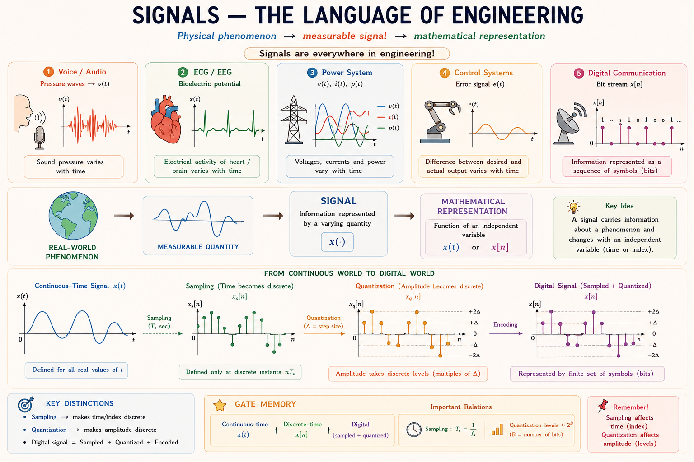
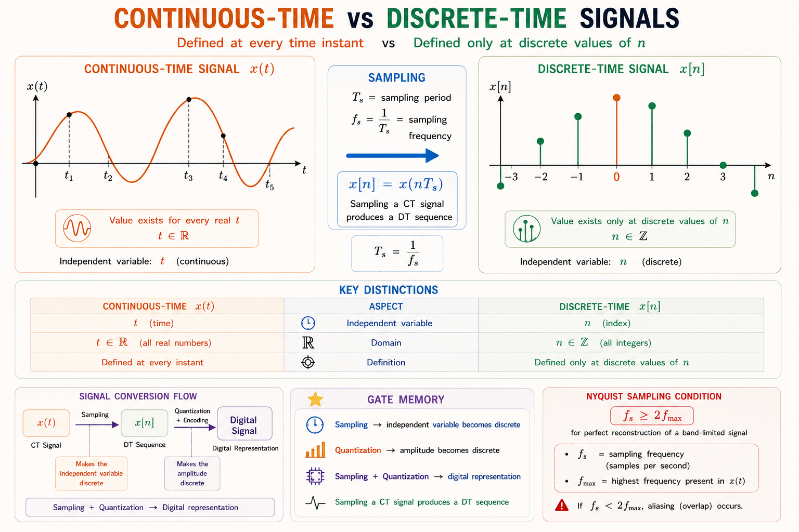
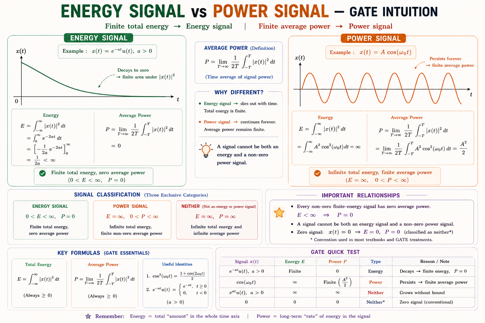
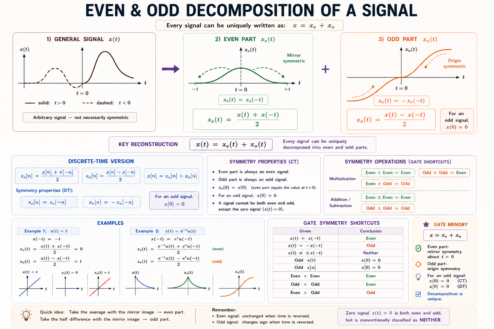
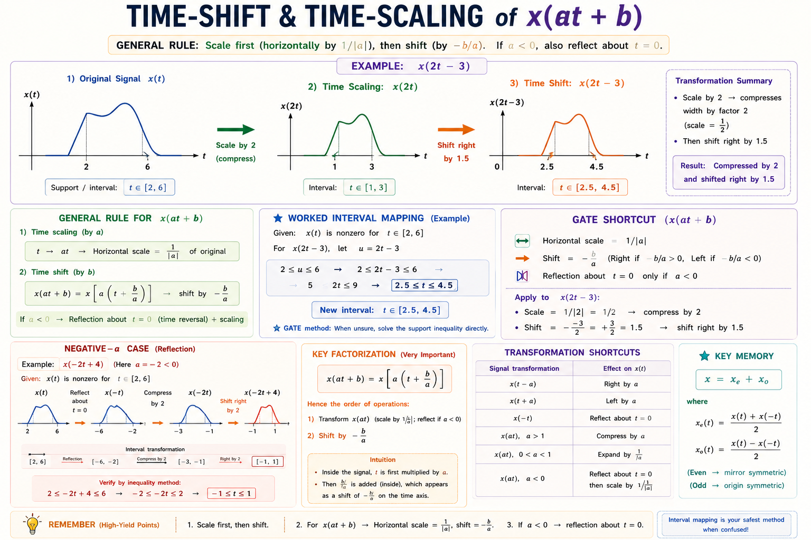
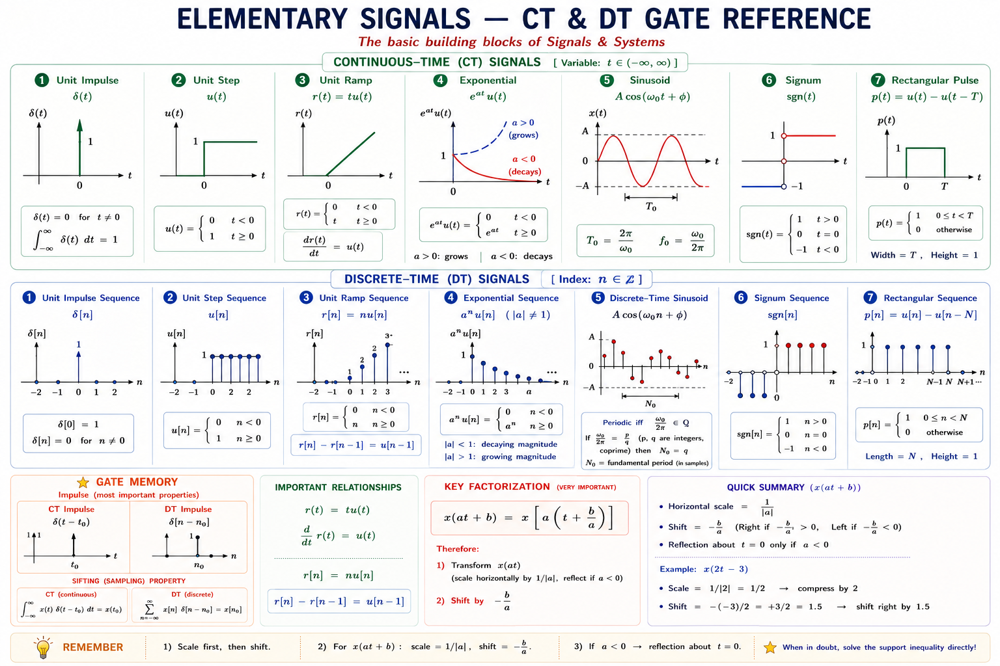
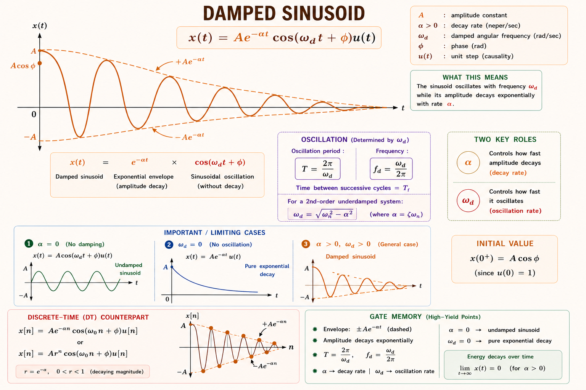

Classification of signals, energy and power, periodic and aperiodic, even and odd signals, time shifting and scaling, and all elementary signals — complete coverage with derivations, SVG diagrams, GATE/IES PYQs, and solved numericals based on Oppenheim & Willsky and Lathi & Ding.
In the most intuitive sense, a signal is a physical quantity that varies with time, space, or any other independent variable, and carries information about the behaviour or state of some physical system.[1] The voice you speak, the voltage across a resistor, the temperature of a room, the ECG reading from a heart — all are signals.
A signal by itself is meaningless without a system to process it. The subject "Signals and Systems" asks: given a signal at the input of a system, what comes out? This question is at the heart of every communication, control, and power electronics problem you will ever solve.
Mathematically, a signal is represented as a function of one or more independent variables. In most GATE/IES problems, the independent variable is time \(t\) for continuous-time signals, or integer index \(n\) for discrete-time signals.

The most fundamental classification of signals is based on the nature of the independent variable.
A continuous-time signal \(x(t)\) is defined for every value of time \(t\) over a continuous range. The independent variable \(t\) takes values from a continuum — it can be any real number. The signal itself (the amplitude) may be continuous or discontinuous, but the time axis has no gaps.[1]
A signal \(x(t)\) is continuous-time if it is defined for all \(t \in \mathbb{R}\). Examples: voltage across a capacitor \(v_C(t)\), mains supply \(230\sin(100\pi t)\) V, human voice pressure wave.
A discrete-time signal \(x[n]\) is defined only at integer values of the independent variable \(n\). It is obtained by sampling a CT signal at regular intervals \(T_s\), so \(x[n] = x(nT_s)\). Between samples, the signal simply does not exist — it is not zero, it is undefined.[1]
DT signals use square brackets \(x[n]\), not parentheses. The index \(n\) is always an integer. Never write \(x[1.5]\) — it is undefined. Between sample points, a DT signal has no value.

Every signal carries energy or power. Classifying a signal as an energy signal or power signal tells us how its energy is distributed over time — this is critical in communication systems, filter design, and Parseval's theorem applications.[2]
Energy Signal: \(E < \infty\) (finite energy) and \(P=0\). | Power Signal: \(P < \infty\) (finite, non-zero power) and \(E=\infty\). | A signal cannot be both simultaneously. It can be neither (e.g. \(x(t)=e^{t}\) for \(t \geq 0\)).

| Property | Energy Signal | Power Signal | Neither |
|---|---|---|---|
| Total Energy \(E\) | Finite (\(E < \infty\)) | Infinite (\(E = \infty\)) | Infinite |
| Average Power \(P\) | Zero (\(P = 0\)) | Finite, non-zero | Infinite |
| Example CT | \(e^{-at}u(t)\), rect, tri | \(\sin(\omega_0 t)\), DC, step | \(e^t\) for \(t \geq 0\) |
| Example DT | \(\alpha^n u[n]\), \(|\alpha|<1\)< /td> | \(\cos(\omega_0 n)\), \(u[n]\) | \(n\cdot u[n]\) |
| Duration | Finite or decays to 0 | Infinite, sustained | Grows unbounded |
The unit step \(u(t)\) is a power signal, not an energy signal. Its total energy is infinite because it exists for all \(t \geq 0\). Its average power \(P = \frac{1}{2}\). Many students wrongly assume it is an energy signal because it "starts at zero" before \(t = 0\).
For \(x(t) = A\cos(\omega_0 t + \phi)\), using the identity \(\cos^2\theta = \frac{1 + \cos 2\theta}{2}\):
The cross term \(\cos(2\omega_0 t + 2\phi)\) averages to zero over a full period. This result is identical to the \(\frac{V_m^2}{2R}\) power formula from circuit analysis — Signals & Systems unifies the concepts.
A CT signal \(x(t)\) is periodic with period \(T > 0\) if
The fundamental period \(T_0\) is the smallest positive value of \(T\) for which this holds. The fundamental frequency is \(f_0 = 1/T_0\) Hz, and angular frequency \(\omega_0 = 2\pi f_0\) rad/s.
A DT signal \(x[n]\) is periodic with period \(N\) (a positive integer) if
For \(x[n] = A\cos(\omega_0 n + \phi)\) to be periodic, we need \(\frac{\omega_0}{2\pi}\) to be a rational number (ratio of two integers). If \(\frac{\omega_0}{2\pi} = p/q\) in lowest terms, the fundamental period is \(N = q\). If the ratio is irrational, the signal is aperiodic!
Here \(\omega_0 = 0.3\pi\). Check the ratio: \(\dfrac{\omega_0}{2\pi} = \dfrac{0.3\pi}{2\pi} = \dfrac{0.3}{2} = \dfrac{3}{20}\).
Since \(\dfrac{3}{20}\) is rational (in lowest terms: \(p = 3\), \(q = 20\)), the signal is periodic with fundamental period \(N_0 = 20\).
If \(x_1(t)\) has period \(T_1\) and \(x_2(t)\) has period \(T_2\), then \(x(t) = x_1(t) + x_2(t)\) is periodic only if the ratio \(T_1/T_2\) is rational. The combined period is the LCM of \(T_1\) and \(T_2\).
Every signal can be uniquely decomposed into an even part and an odd part: \(x(t) = x_e(t) + x_o(t)\). This is heavily used in Fourier series (even → cosine terms; odd → sine terms) and in proving symmetry properties of the Laplace / Fourier transforms.

1. The odd part of any signal is always zero at \(t = 0\): \(x_o(0) = 0\). 2. Product of two even or two odd signals is even. 3. Product of an even and an odd signal is odd. 4. \(\int_{-\infty}^{\infty} x_o(t)\,dt = 0\) (odd integral over symmetric limits).
Signal transformations are the language through which systems process signals. Mastering them is essential — GATE consistently tests the ability to sketch a transformed signal from the original.[1]
| Transformation | Operation | Effect on Signal | GATE Note |
|---|---|---|---|
| Time shift (delay) | \(x(t - t_0)\), \(t_0 > 0\) | Shifts right by \(t_0\) | Most common in convolution |
| Time shift (advance) | \(x(t + t_0)\), \(t_0 > 0\) | Shifts left by \(t_0\) | Anti-causal; used in prediction |
| Time reversal (folding) | \(x(-t)\) | Flips left-right about \(t=0\) | Used in convolution derivation |
| Time scaling (compression) | \(x(at)\), \(a > 1\) | Compresses by \(a\) | In freq. domain: stretches spectrum |
| Time scaling (expansion) | \(x(at)\), \(0 < a < 1\) | Stretches by \(1/a\) | In freq. domain: compresses spectrum |
| Amplitude scaling | \(Ax(t)\) | Scales amplitude by \(A\) | Does not affect time axis |

Time compression by \(a\) ↔ Frequency expansion by \(a\). This is why high-speed data (compressed in time) requires more bandwidth (expanded in frequency). Same formula, opposite effect on the two domains.
| Classification | CT Signal | DT Signal | Test / Condition |
|---|---|---|---|
| Periodic | \(x(t+T)=x(t)\), \(T>0\) | \(x[n+N]=x[n]\), \(N\in\mathbb{Z}^+\) | DT: need \(\omega_0/2\pi \in \mathbb{Q}\) |
| Even | \(x(-t)=x(t)\) | \(x[-n]=x[n]\) | Mirror about origin |
| Odd | \(x(-t)=-x(t)\) | \(x[-n]=-x[n]\) | Anti-mirror; \(x(0)=0\) |
| Energy | \(\int|x|^2 dt < \infty\) | \(\sum|x[n]|^2 < \infty\) | \(P = 0\) |
| Power | \(0 < P < \infty\) | \(0 < P < \infty\) | \(E = \infty\) |
| Causal | \(x(t)=0\) for \(t < 0\) | \(x[n]=0\) for \(n < 0\) | Exists only for \(t\geq 0\) |
| Anti-causal | \(x(t)=0\) for \(t > 0\) | \(x[n]=0\) for \(n > 0\) | Exists only for \(t\leq 0\) |
| Deterministic | Completely specified by formula | Completely specified | No randomness |
| Random | Only statistical description | Stochastic process | Noise, channel fading |
Elementary signals are the building blocks of all signal analysis. Every practical signal in engineering can be expressed as a combination of these primitives. They also serve as test inputs for characterising systems.[1,2]
In the Laplace/Z-transform world, knowing the transform of these signals is enough to analyse any LTI system. In GATE, at least 1–2 questions per year involve sketching, transforming, or computing properties of these signals.

The Dirac delta function \(\delta(t)\) is the most important signal in all of signal analysis. It is not a function in the classical sense but a generalised function (distribution) defined by its behaviour under integration.[1]
The sifting property is what makes \(\delta(t)\) so powerful: it samples any function at a specific point. In LTI systems, the impulse response \(h(t)\) is the output when the input is \(\delta(t)\), and it completely characterises the system.
Many students write \(\delta(2t) = \delta(t)\). This is wrong. The correct result is \(\delta(2t) = \dfrac{1}{2}\delta(t)\). The scaling brings a factor of \(\dfrac{1}{|a|}\). Always check this in your working.
The value at \(t = 0\) is taken as \(\frac{1}{2}\) in the Fourier sense, though in most engineering problems this point is irrelevant. The step function is used to switch on signals: \(e^{-at}u(t)\) means the exponential starts at \(t = 0\).
The ramp is the integral of the step: \(r(t) = \int_{-\infty}^{t} u(\tau)\,d\tau\). Differentiating the ramp gives the step, and differentiating the step gives the impulse. This hierarchy is central to LTI system analysis.
The complex exponential \(x(t) = Ce^{st}\) with \(s = \sigma + j\omega\) is the most general elementary signal. All other signals are special cases:
| Value of s | Signal Form | Behaviour | Example |
|---|---|---|---|
| \(s = 0\) | DC: \(C\) | Constant | Battery voltage |
| \(s = \sigma < 0\) | Decaying exp: \(Ce^{-|\sigma|t}\) | Energy signal, stable | RC circuit discharge |
| \(s = \sigma > 0\) | Growing exp: \(Ce^{\sigma t}\) | Unstable, unbounded | Unstable amplifier |
| \(s = j\omega_0\) | Sinusoid: \(Ce^{j\omega_0 t}\) | Power signal, persistent | AC mains |
| \(s = \sigma + j\omega_0\) | Damped sinusoid | Decays as it oscillates | LC circuit with R loss |

The rect pulse is \(A\) for \(-\tau/2 < t < \tau/2\) and zero elsewhere.
Since \(A^2\tau < \infty\), this is an energy signal with \(E = A^2\tau\) joules, and average power \(P = 0\).
General formula: for \(x(t) = e^{-at}u(t)\), \(E = \dfrac{1}{2a}\). Here \(a = 3\), so \(E = \dfrac{1}{6}\) J.
Step 1 — Find the new limits. The original pulse exists when \(0 \leq t \leq 4\). For \(y(t) = x(2t-3)\), substitute: set \(u = 2t-3\), then pulse exists when \(0 \leq u \leq 4\), i.e., \(0 \leq 2t - 3 \leq 4\).
Step 2 — Solve for \(t\): \(3 \leq 2t \leq 7\), so \(\dfrac{3}{2} \leq t \leq \dfrac{7}{2}\), i.e., \(1.5 \leq t \leq 3.5\).
Conclusion: \(y(t) = x(2t-3)\) is a rectangular pulse from \(t = 1.5\) to \(t = 3.5\), width \(= 2\) (half the original width 4, because time is compressed by 2). Amplitude unchanged at 1.
For \(x(at + b)\): new limits = (old limits \(-b\))\(/a\). Width shrinks by \(|a|\) for compression, grows by \(1/|a|\) for expansion.
We know \(x(t) = u(t)\) (step: 1 for \(t \geq 0\), 0 for \(t < 0\)) and \(x(-t)=u(-t)\) (reverse step: 1 for \(t \leq 0\), 0 for \(t> 0\)).
The odd part of \(u(t)\) is the signum function scaled by \(\frac{1}{2}\): it is \(+\frac{1}{2}\) for \(t > 0\) and \(-\frac{1}{2}\) for \(t < 0\).
By the sifting property of the Dirac delta: \(\displaystyle\int_{-\infty}^{\infty} x(t)\,\delta(t - t_0)\,dt = x(t_0)\).
Here \(x(t) = t^2 + 3t + 5\) and \(t_0 = 2\).
The energy of the signal \(x[n] = \left(\dfrac{1}{2}\right)^n u[n]\) is:
Solution: \(E = \displaystyle\sum_{n=0}^{\infty}\left(\frac{1}{2}\right)^{2n} = \sum_{n=0}^{\infty}\left(\frac{1}{4}\right)^n = \dfrac{1}{1 - 1/4} = \dfrac{4}{3}\). This is a geometric series with ratio \(r = 1/4 < 1\).
For \(x_1[n] = \cos(0.2\pi n)\): \(\dfrac{\omega_1}{2\pi} = \dfrac{0.2\pi}{2\pi} = \dfrac{1}{10}\), so \(N_1 = 10\).
For \(x_2[n] = \sin(0.4\pi n)\): \(\dfrac{\omega_2}{2\pi} = \dfrac{0.4\pi}{2\pi} = \dfrac{1}{5}\), so \(N_2 = 5\).
Combined period: \(N = \text{LCM}(10, 5) = \mathbf{10}\).
For \(x(t) = e^{-|t|}\):
Since \(E = 1 < \infty\), \(x(t)=e^{-|t|}\) is an energy signal with unit energy. Its average power is \(P = 0\).
Use scaling: \(\delta(1 - 2t) = \delta(-( 2t - 1)) = \delta(2t - 1) = \dfrac{1}{2}\delta\!\left(t - \dfrac{1}{2}\right)\).
Even part of \(u(t)\) is \(\dfrac{1}{2}\) for all \(t \neq 0\). Odd part is \(\dfrac{1}{2}\text{sgn}(t)\). This IES question tests whether students know the connection between step, signum, and even/odd decomposition.
Have a doubt? Type your question below or tap a suggestion.
Energy (finite E, P=0) | Power (P finite, E=∞) | Impulse (area = 1, height = ∞) | Causal (starts at 0). If a signal "lives forever at constant amplitude" → Power signal. If it "dies away" → Energy signal.
Shift first (add/subtract b inside), then Scale (multiply by a). Or equivalently: find the zero of the argument (\(at + b = 0 \Rightarrow t = -b/a\)) — that's the new anchor point. The width scales by \(1/|a|\). If \(a < 0\), Flip (reflect).
Think: "scaling the time axis by \(a\) shrinks the impulse height by \(|a|\)". The area must remain 1, so \(\delta(at)\) must have height \(1/|a|\), i.e., \(\delta(at) = \delta(t)/|a|\). Test: \(\int\delta(2t)dt = \int\frac{1}{2}\delta(t)dt = \frac{1}{2}\). ✓
For \(x[n] = e^{j\omega_0 n}\): write \(\omega_0 = \frac{p\pi}{q}\) in lowest terms. If \(\frac{\omega_0}{\pi}\) is rational, period \(N = 2q\). If \(\frac{\omega_0}{2\pi}\) is rational, period \(N = q\). When in doubt: reduce the ratio and read off the denominator.
| Formula | Memory Hook | Common Error |
|---|---|---|
| E of \(e^{-at}u(t)\) | "1 over 2a" — two times the exponent coefficient | Forgetting the factor of 2 from squaring |
| P of \(A\cos(\omega_0 t)\) | "A squared over 2" — same as RMS formula \(V_{rms}^2\) | Using \(A^2\) instead of \(\frac{A^2}{2}\) |
| \(\delta(at) = \frac{1}{|a|}\delta(t)\) | "Scaling divides the delta" | Writing \(\delta(at) = \delta(t)\) |
| DT period with \(\omega_0/2\pi = p/q\) | "Denominator is the period" | Not reducing fraction to lowest terms |
| \(x_e(t) = [x(t)+x(-t)]/2\) | "Average of signal and its mirror" | Sign error: \(-x(-t)\) instead of \(+x(-t)\) |
CT: \(x(t)\), \(t\in\mathbb{R}\), round brackets. DT: \(x[n]\), \(n\in\mathbb{Z}\), square brackets. Between DT samples, the signal is undefined (not zero).
\(E = \int|x|^2 dt < \infty\). \(P=0\). Signal must decay to zero. Ex: \(e^{-at}u(t)\), rect, triangular pulses.
\(P = \lim\frac{1}{2T}\int|x|^2 dt\), finite non-zero. \(E=\infty\). Ex: sinusoids, unit step, DC. Sinusoid: \(P = A^2/2\).
CT: \(x(t+T)=x(t)\). DT: \(x[n+N]=x[n]\). DT sinusoid periodic only if \(\omega_0/2\pi \in \mathbb{Q}\). Sum period = LCM.
\(x_e = [x(t)+x(-t)]/2\). \(x_o = [x(t)-x(-t)]/2\). \(x = x_e + x_o\). Odd part: \(x_o(0)=0\). \(\int x_o\,dt = 0\).
\(x(at+b)\): scale by \(\frac{1}{|a|}\), shift by \(-\frac{b}{a}\). Reflect if \(a<0\). Width → \(\frac{\text{original width}}{|a|}\). Anchor at \(t=-\frac{b}{a}\).
Sifting: \(\int x(t)\delta(t-t_0)dt = x(t_0)\). Scaling: \(\delta(at) = \delta(t)/|a|\). \(\int\delta(t)dt = u(t)\). \(d/dt[u(t)] = \delta(t)\).
δ(t), u(t), r(t)=tu(t), \(e^{-at}u(t)\), \(\cos(\omega_0 t)\). Hierarchy: δ → u → r via integration. Complex exp covers all cases via \(s = \sigma+j\omega\).
Energy of \(e^{-at}u(t)\): \(\frac{1}{2a}\). Power of \(A\cos\): \(\frac{A^2}{2}\). DT energy of \(\alpha^n u[n]\): \(\frac{1}{1-\alpha^2}\), \(|\alpha|<1\).
All technical content is derived from the following standard textbooks. All explanations, derivations, diagrams, and examples are original to Aarova AI.